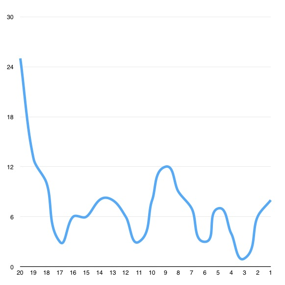
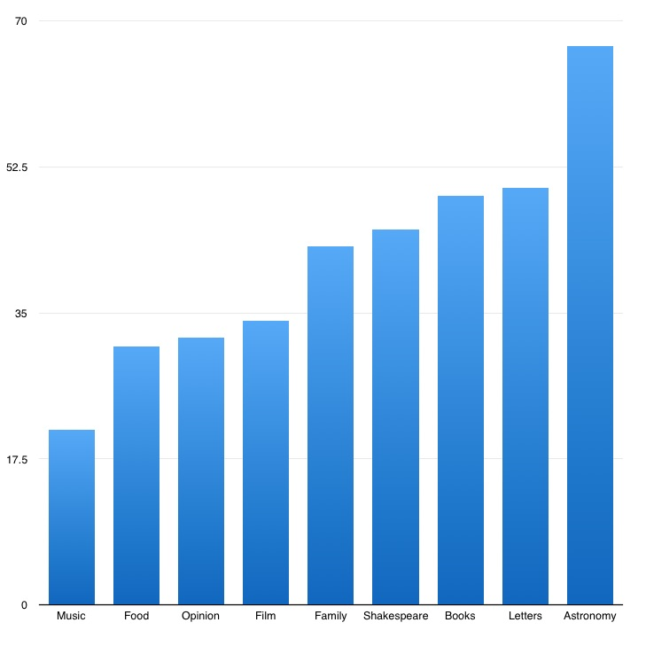
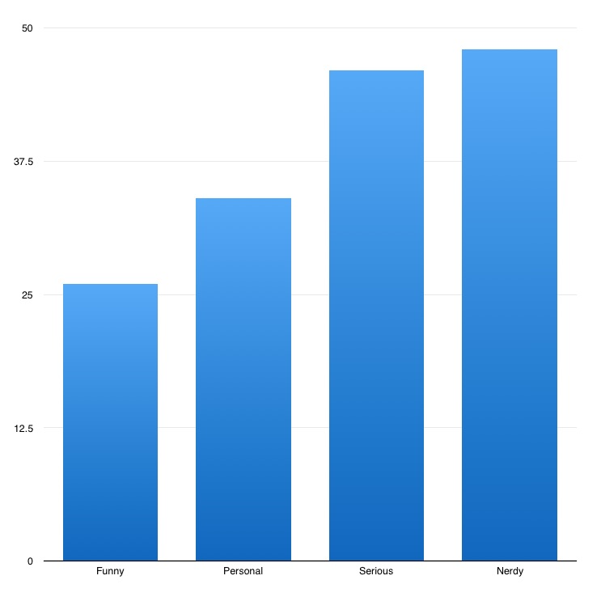
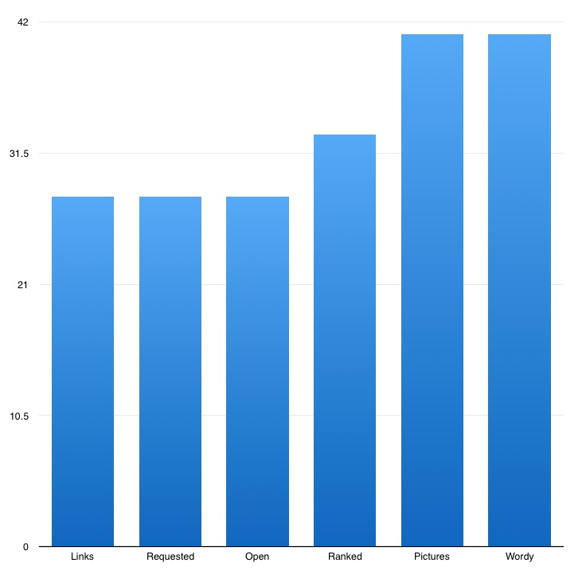

MY LIST APP BETA STATS
I was on The List App beta for 20 weeks. Invited by @ChrisK. For whatever reason I never invited anyone. This was a natural outlet for me because I’ve always been a fan of keeping lists of semi-random things.
-
In that time I made 160 lists, received 2,129 likes, 326 shares, 688 comments, and 37 suggestions. My average list has 9 items, one has 70 and thee have just one.
-
My first list: THINGS TOM WAITS THINKS THE MOON LOOKS LIKE
https://li.st/l/31353631-3030-0000-0000-000000000000 This was a copy/paste right out of one of my lists in Evernote.
-
My most popular list: SOMETIMES
https://li.st/l/31383339-3431-0000-0000-000000000000 The comments on this list made me feel very special for a while. Thanks listers!
-
My most liked list: MY FUTURE WIFE
https://li.st/l/31373032-3439-0000-0000-000000000000 I cannot express how happy it makes me that my most liked list is a list of reasons I love my wonderful wife. 💗
-
My most shared list: A LIST OF FASCINATING LETTERS
https://li.st/l/31353733-3036-0000-0000-000000000000 All credit goes to @shaun's world-class web site and books, Letters of Note http://www.lettersofnote.com/ . Shaun wasn't here back then so I linked up some of my favorites from his site in four lists (which of course I had long kept privately). Search for "a list of letters" to find them all.
-
My most commented list: STAR WARS FILMS RANKED
https://li.st/l/ead55b4a-9e90-4356-ba9a-a31eadde61e0 A silly conversation with some of us goofy beta users.
-
My longest list: THE MURALS OF PHOENIX
https://li.st/l/31373430-3336-0000-0000-000000000000 70 items covering all the murals around my home. A close second with 67 items is SOPHIA ON POINT https://li.st/l/31373035-3434-0000-0000-000000000000 another list I've kept for years of funny things my daughter says.
-
My least popular list: a tie between THINGS LUCINDA WILLIAMS WAS BLESSED BY and ICONIC U2 GUITAR HOOKS
Just one like each. https://li.st/l/31383434-3739-0000-0000-000000000000 and https://li.st/l/31383235-3937-0000-0000-000000000000
-

My list frequency.
I listed like mad in the first week, and I've been sporadic ever since. My busiest week had 25 lists. My slowest week had just one.
-

My list topics.
My least poplar topic by far is Music. The most poplar is Astronomy, buoyed heavily by 85 YEARS OF PLUTO: OUR EVOLVING VIEW https://li.st/l/31363037-3538-0000-0000-000000000000 . Other popular topics are Shakespeare, Books, Letters, and my Family.
-

My list tone.
When I try to be funny my lists are less popular. When the topic is personal the list has slightly above average popularity. And when the topic is serious it does much better. But my most popular lists are serious lists on nerdy topics like Shakespeare, Astronomy, and Language.
-

My list formats.
My lists of links, requested lists, and open lists did poorly. Ranked lists were right in line with average. Unsurprisingly, lists with lots of pictures did well. *Surprisingly*, wordy lists (like this one) did well too.
-
But let's not forget...
I made a lot of connections with people I would otherwise never talk to. I laughed a lot. I was moved a lot. I felt a sort of kinship a time or two with total strangers. I learned about the 💯 emoji. I'm not sure how to chart all that.